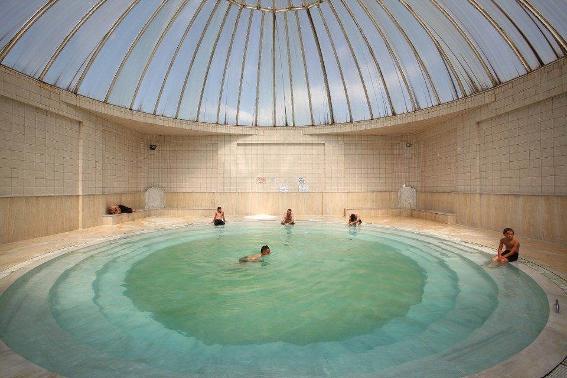
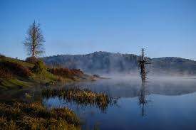
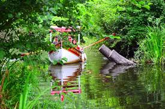
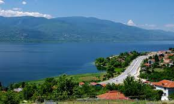
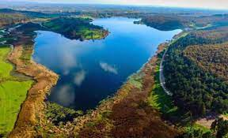
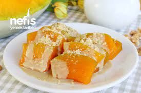

Sakarya Rehberi ;

Aşağıdaki linklere tıklayarak istediğiniz alanı inceleyebilirsiniz.
Sakarya Tanıtım :
Hızlı kalkınması ve gelişmesiyle Türkiye’nin önemli şehirlerinden birisi olan Adapazarı, doğal güzellikleri ve yöresel kültürünün zenginliğiyle de dikkat çekmektedir. Denizi, kumsalları, gölleri, nehirleri, yaylaları, kaplıcaları yanında Taraklı ve Geyve gibi Osmanlı dönemi yerleşim yerlerindeki geleneksel yaşantısıyla, Bizans ve Osmanlı dönemi tarihi eserleriyle ülkemizin görülmeye değer cennet köşelerinden biridir. Türklerin XIII. yüzyılda fethettiği Sakarya iline, Kafkasya’dan, Balkanlardan XVIII. ve XIX. yüzyıllarda yoğun göçler yaşanmıştır. Yüzyılın son kitlesel göçüyle 1989 yılında Bulgaristan’dan soydaşlarımız gelmiştir. Gelişen sanayisi ve ulaşım yollarının kavşak noktası Sakarya’ya günümüzde de iç göçler halen sürmektedir. Yakın bir gelecekte bir milyon insanın yaşayacağı Sakarya ili, Marmara Bölgesi'nin parlayan yıldızıdır. Sakarya ili, doğudan Düzce ili, güneydoğudan Bolu ili, güneyden Bilecik ili, batıdan Kocaeli ili ve kuzeyden ise Karadeniz ile çevrilidir. Sakarya ilinin 16 ilçesi bulunmaktadır. Bunlar; Adapazarı, Akyazı, Arifiye, Erenler, Ferizli, Geyve, Hendek, Karapürçek, Karasu, Kaynarca, Kocaali, Pamukova, Sapanca, Serdivan, Söğütlü ve Taraklı’dır.
Doğal Güzellikler :
Marmara Bölgesi’nin gözde şehirlerinden bir tanesi olan Sakarya; doğa, tarihi ve turistik yerleri sayesinde oldukça ilgi görmektedir. Sakarya ziyaretçileri; burada aileleri ya da arkadaş grupları ile birlikte temiz hava ve doğanın tadını çıkarma şansına sahiptir. Sakarya özellikle İstanbul, Bursa gibi mega şehirlere yakınlığı ile insanlara haftasonu kaçamağı yapabilecekleri muhteşem bir doğa sunuyor. İşte bunlardan bazıları;
Kuzuluk Kaplıcaları :
Sakarya şehir merkezinden ortalama olarak 40 km uzaklıkta yer alan Kuzuluk Kaplıcaları’na ulaşım; özel araç ve taksiler aracılığı ile kolayca gerçekleştirilebilir. Kuzuluk Kaplıcaları’nı ziyaret eden gezginler; burada aileleri ya da arkadaş grupları ile birlikte suya girebilir, rahatlayabilir ve çeşitli hastalıkları tedavi edebilir. Aynı zamanda; Kuzuluk Kaplıcaları’nın hemen yanında yer alan tesislerde konaklanabilir, işletme hizmetlerinden yararlanılabilir. Kuzuluk Kaplıcaları hem yaz hem de kış aylarında ziyaret edilebilmektedir ve giriş saati bulunmamaktadır. Kuzuluk Kaplıcaları’na giriş ücretini ise oteller belirlemektedir. Giriş ücretleri otellere bağlı olarak 10 TL ile 25 TL arasında değişkenlik göstermektedir.
Acelle Yaylası :
Sakarya il merkezinin ortalama olarak 60 km uzağında yer alan Acelle Yaylası’na ulaşım; özel araçlar aracılığı ile kolayca gerçekleştirilebilir.Acelle Yaylası, pek çok yürüyüş alanına ev sahipliği yapmaktadır ve oldukça dikkat çekici bir manzaraya sahiptir. Acelle Yaylası’nın içerisinden akan Enişte Deresi; yayla içerisinde oldukça ilgi çekici bir gölet oluşturmuştur. Tatilciler; göletin etrafında tur atabilir, yayladaki canlı çeşitlerini gözlemleyebilir ve görüntüsü ile huzur veren yeşilliklerin arasında keyifli bir gün geçirebilir. Acelle Yaylası, yılın her günü ve günün her saati, tamamen ücretsiz olarak ziyaret edilebilmektedir.
Acarlar Longozu :
Sakarya il merkezinin aşağı yukarı 60 km uzağında yer alan Acarlar Longozu’na ulaşım; özel araç ve taksiler aracılığı ile kolayca gerçekleştirilebilir. Acarlar Longozu, uzun yürüyüş parkurlarına, çeşitli canlı türlerine ve oldukça dikkat çekici bir manzaraya sahiptir. Acarlar Longozu’nda, su üstünde göl bisikletleri ile gezme imkanı da bulunmaktadır. Su üstünde hoş bir gezintiye çıkan gezginler; bölgede bulunan işletme hizmetlerinden de yararlanma şansına sahiptir. Acarlar Longozu, yılın her günü ve saati, tamamen ücretsiz olarak ziyaret edilebilmektedir.
Sapanca Gölü : :
Sakarya şehir merkezinden ortalama olarak 20 km uzaklıkta yer alan Sapanca Gölü’ne ulaşım; özel araçlar, taksiler ve özel otobüs firmaları aracılığı ile kolayca gerçekleştirilebilir. Sapanca Gölü, doğa ile iç içe olmaktan keyif alan hemen herkesin seveceği noktalardan bir tanesidir. Sapanca Gölü’nde kanolar ile gezintiye çıkmak ve göl bisikletleri ile suda süzülmek mümkündür. Sapanca Gölü; kamp, piknik ve trekking gibi aktiviteler için de oldukça uygundur. Sapanca Gölü’nün en ilgi çekici olan tarafı ise eşsiz manzarasıdır. Sapanca Gölü, yılın her günü ve günün her saati, tamamen ücretsiz olarak ziyaret edilebilmektedir. Sakarya'nın en güzel tatil köşelerinden Sapanca'daki konaklama seçeneklerine Sapanca Otelleri sayfasından ulaşabilirsiniz.
Poyrazlar Gölü :
Poyrazlar Gölü, Sakarya şehir merkezinden aşağı yukarı 12 km uzaklıkta yer almaktadır. Poyrazlar Gölü’ne ulaşım; özel araçlar ve taksiler ile gerçekleştirilebilir. Poyrazlar Gölü; aile ve arkadaş gruplarının keyifli zaman geçirebildiği yerlerden bir tanesidir. Ziyaretçiler; burada bulunan eşsiz manzara karşısında piknik yapabilir ve göldeki canlıları gözlemleyebilir. Yeşil alanlarda gezmekten keyif alan tatilciler; ATV turları düzenleyebilir ve rüzgarı hissedebilir. Poyrazlar Gölü, yılın her günü ve günün her saati ziyarete açıktır. Poyrazlar Gölü’ne giriş ücreti; yetişkinler için 6 TL, öğrenciler ve çocuklar için 3 TL olarak belirlenmiştir. Poyrazlar Gölü’ne araçları ile giriş yapmak isteyen gezginler; araç giriş bedeli olarak 15 TL ödemelidir.
İklim :
Sakarya ilinin Karadeniz kıyılarında Karadeniz iklimi, güney kısmında Marmara tipi Akdeniz iklimi etkilidir. Kuzeyde Fındık yetiştirilirken, güney ilçelerinde bir kısmı zeytin bahçesi olan meyve bahçeleri yaygın olması bunun göstergesidir. İl merkezinin güneyinde yer alan Samanlı dağları ve Keremali dağları Karadeniz iklim etkisinin güneye ulaşmasına engel olur. İlin güney bölümüne İznik Gölü yönünden Akdeniz hava kütleleri ulaşır. Yağış Kuzeyden güneye doğru azalır: Karasu'da 1000 mm, Merkezde 840 mm, Geyve'de 600 mm'ye düşer. Hakim rüzgâr yönü KKB'dır. Bağıl nem ortalaması %72'dir.[17] Yıllık sıcaklık ortalaması 14,2 °C'dir. Ocak ayının fazla soğuk olmaması (5.9 °C), Temmuz sıcaklıklarının yüksek olamaması (23.3 °C), yıllık sıcaklık farkının düşük olması (17.4 °C), Karadeniz iklimi etkisindendir. Yağışın mevsimlere dağılışı: %31 kışın, %26 sonbahar, %22 ilkbahar, %21 yaz. Bu dağılım Karadeniz yağış rejiminin özeliklerini yansıtır. Yağışın %95,9'u normal, %3,7'si sağanak şeklindedir. Yıllın 133 günü yağışlıdır.
Mutfak :
Çok kültürlü bir yapıya sahip olan Sakarya ilinde bu kültürlerin ve etnik yapının etkisine bağlı olarak mutfak kültürü de zenginleşmiştir. Yörede yaşayan Yörükler, Kafkaslar, Boşnaklar, Lazlar, Arnavutlar ve daha birçok göçmen kendi mutfak kültürlerini Sakarya mutfağına yansıtmıştır. Böylece Sakarya mutfağına 100’den fazla yöresel yemek girmiş ve tüm kültürlerin harmanlandığı dikkat çekici geleneksel bir mutfak ortaya çıkmıştır. Farklı coğrafi ve kültürel yapı, mevsimsel koşullara bağlı olarak değişen mutfak özelliklerine sahip olan Sakarya mutfağı, buğday ürünleri ve sebze türlerini birleştiren yemekler, hamur işleri ve süt ürünleri ağırlıklı olarak şekillenir. Sakarya’nın zirai yönden verimli topraklara sahip olması mutfak ürün çeşitliliğinin de zengin olmasını sağlamıştır. Sakarya mutfağında öne çıkan lezzetler; Çerkez tavuğu, ıslama köfte, dımbıl çorbası, balkabaklı ekmek, dartılı keşkek gibi lezzetler yer almaktadır.
Kabak Tatlısı :
Meşhur Adapazarı Kabağı denince akla ilk olarak bu kabağın nasıl olduğu akıllara gelmektedir. Normal yemeklik kabak olmadığını bilmek gerekir ki, Adapazarı’nın meşhur olan kabağı bal kabağıdır. Bal kabağından ise malumunuz genellikle tatlı yapılmaktadır. O nedendendir ki, Kabak Tatlısı Sakarya’nın sembolü haline gelmiştir.
Islama Köfte :

Islama köfte, Adapazarı'nın yöresel lezzetlerinden olan bir yemektir. Dilimlenmiş ekmekler biberli ve yağlı et suyuna batırılır ve köftelerle birlikte ızgaralanır. Adapazarı Islama Köftesi 08.01.2013 tarihinde Türk Patent ve Marka Kurumu tarafından tescillenmiş ve coğrafi işaret almıştır.